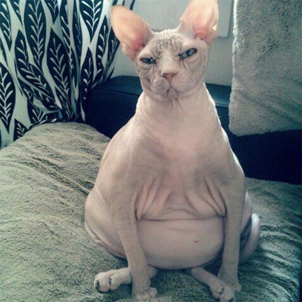

Ő itt Cirmi

Ő egy olyan macska, ami jól alkalmazkodik az emberrel való együttéléshez, nem alá-, vagy fölérendelt, hanem mellérendelt köztük a viszony. Élvezi, hogy körülötted lehet, szeretetteljes, és nagyrészt kiegyensúlyozott. Jól alkalmazkodik, sok szempontból ő az ideális macska és társ. Boldogan tölt veled időt anélkül, hogy agressziót vagy erőszakot alkalmazna, bármilyen negatív viselkedést produkálna. Ugrás az oldal tetejére
Ő itt Murci
Bár nem teljesen elvadúlt típus, ennek ellenére nem igazán szereti, ha megérintik, felveszik vagy interakcióba lépnek vele (természetesen az etetést és a jutalomfalatokat kivéve). Gyakran frusztrált, és abban sem lehetsz biztos, hogy számára lényelmes az, hogy Te is osztozol vele a házon.
Ugrás az oldal tetejéreŐ itt Szotyi

Igazán társas lény, csak éppen nem téged, hanem egy másik macskát választ társnak. Igazán szeretetteljes, bújós és dorombolós, de ideje nagy részét másik macskával való összefonódással, ápolgatással és játékkal tölti.
Ugrás az oldal tetejéreŐ itt Pille

Lehet, hogy az egyik másodpercben még az öledben fekve dorombol, a következőben pedig a legnagyobb sebességel rohangál és a függönyt tépi.
Ugrás az oldal tetejéreŐ itt Berci

Szívesen és gyakran kerül összetűzésbe a ház többi lakójával, jól bírja a konfrontációt, lesből is szuperül támad bokára! A határozottság és a következetesség sokat segít a visekedése tompításásban! A gazdinak mindenképpen ki kell okosodnia, hogy lehet a dominanciájának határt szabni!
Ugrás az oldal tetejéreŐ itt Kopasz

A cica nem megy oda bárkihez, és csak azokat tiszteli meg jelenlétével, akik kiérdemlik azt. Ápolása: elhivatott gazdit igényel! A sűrű aljszőr rendkívüli módón tud filcesedni, a keletkezett csomók kibontása pedig nemcsak nehézkes, de az állat számára fájdalmas is lehet. A legjobb mód leborotválni.
Ugrás az oldal tetejére